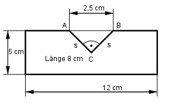

Aufgabe 155 Eine Stahlplatte (Dichte 7,85 g/cm3) ist 12 cm breit, 8 cm lang und 5 cm hoch. In sie wird der Länge nach eine gleichschenklig rechtwinklige Nut mit einer Hypotenuse von 2,5 cm eingefräst. Wie schwer ist die fertige Platte?

Satz von Pythagoras im Dreieck ABC: 2,52 cm2 = s2 + s2 = 2s2 | :2 s2 = 3,125 cm2 |√ s = 1,77 cm VPlatte ohne Nut: VPlatte = 12 cm * 5 cm * 8 cm = 480 cm3 1,77 cm * 1,77 cm VNut = ------------------- * 8 cm = 12,5 cm3 2 mPlatte = (VPlatte - VNut) * 7,85 g/cm3 = = (480 cm3 - 12,5 cm3) * 7,85 g/cm3 mPlatte = 3 669 g = 3,67 kg